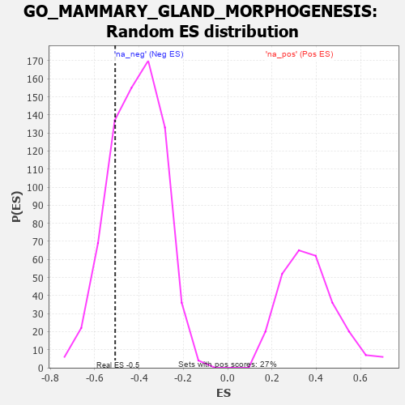

| | | Dataset | 7d |
| Phenotype | NoPhenotypeAvailable |
| Upregulated in class | na_neg |
| GeneSet | GO_MAMMARY_GLAND_MORPHOGENESIS |
| Enrichment Score (ES) | -0.5073982 |
| Normalized Enrichment Score (NES) | -1.222821 |
| Nominal p-value | 0.23224044 |
| FDR q-value | 0.5938039 |
| FWER p-Value | 1.0 |
Table: GSEA Results Summary
 Fig 1: Enrichment plot: GO_MAMMARY_GLAND_MORPHOGENESIS
Fig 1: Enrichment plot: GO_MAMMARY_GLAND_MORPHOGENESIS
Profile of the Running ES Score & Positions of GeneSet Members on the Rank Ordered List
| PROBE | GENE SYMBOL | GENE_TITLE | RANK IN GENE LIST | RANK METRIC SCORE | RUNNING ES | CORE ENRICHMENT | | 1 | BAX | | | 387 | 0.711 | 0.0385 | No |
| 2 | SRC | | | 1128 | 0.459 | 0.0018 | No |
| 3 | LRP5 | | | 1769 | 0.342 | -0.0367 | No |
| 4 | DDR1 | | | 2176 | 0.280 | -0.0534 | No |
| 5 | PHB2 | | | 2712 | 0.197 | -0.0965 | No |
| 6 | FGFR2 | | | 2895 | 0.167 | -0.0988 | No |
| 7 | WNT4 | | | 3023 | 0.146 | -0.0969 | No |
| 8 | MED1 | | | 3405 | 0.089 | -0.1339 | No |
| 9 | NRG3 | | | 3925 | 0.005 | -0.1985 | No |
| 10 | CSF1 | | | 4074 | -0.019 | -0.2147 | No |
| 11 | TBX2 | | | 4303 | -0.060 | -0.2360 | No |
| 12 | VDR | | | 5517 | -0.325 | -0.3486 | No |
| 13 | ELF3 | | | 5768 | -0.396 | -0.3314 | No |
| 14 | AR | | | 7169 | -1.046 | -0.3791 | Yes |
| 15 | MSX2 | | | 7299 | -1.171 | -0.2517 | Yes |
| 16 | CAV3 | | | 7896 | -2.739 | 0.0094 | Yes |
Table: GSEA details [plain text format]

Fig 2: GO_MAMMARY_GLAND_MORPHOGENESIS: Random ES distribution
Gene set null distribution of ES for GO_MAMMARY_GLAND_MORPHOGENESIS